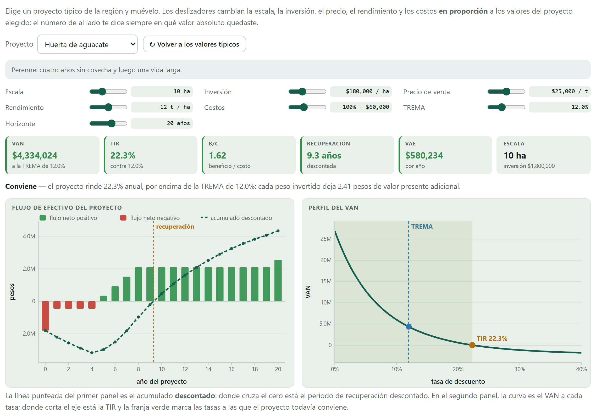
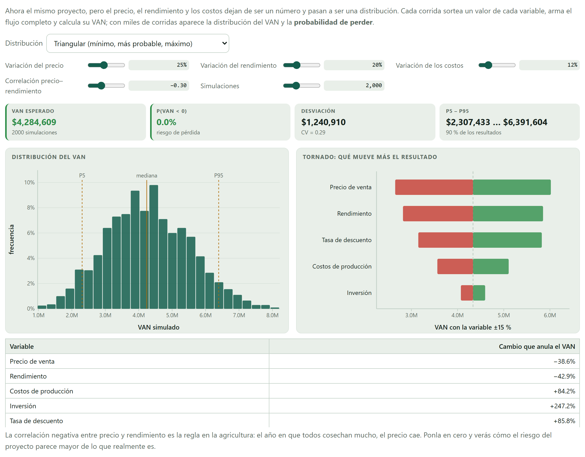
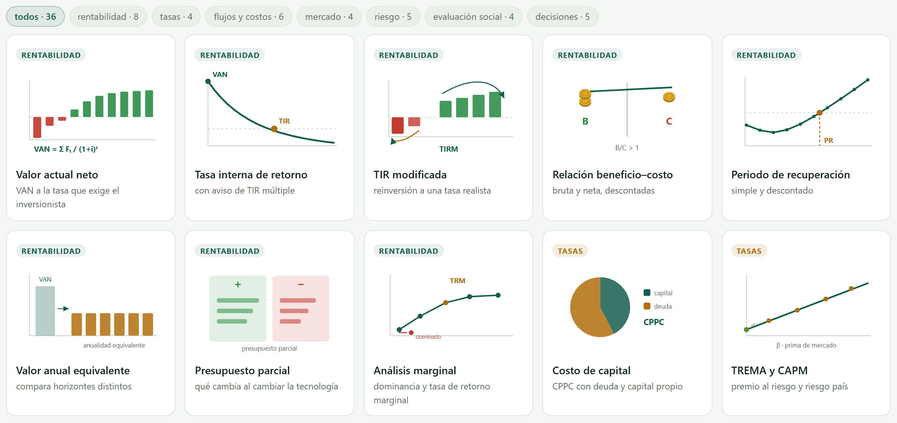
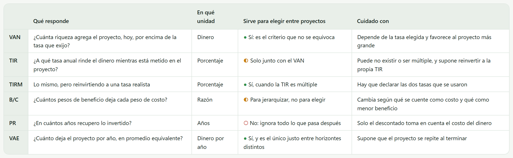
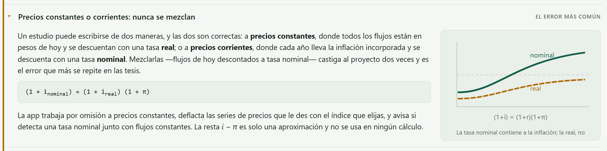
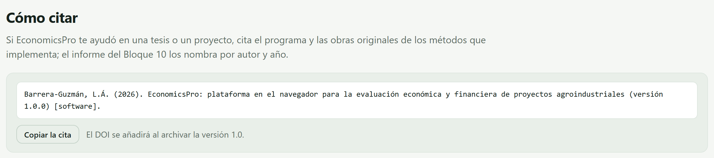

La portada no es un adorno: es donde vive el motor que usan los nueve bloques siguientes, donde se puede mover un proyecto entero con siete deslizadores y ver qué pasa, y donde está la teoría que hace falta para no equivocarse después. Este capítulo la recorre entera y propone nueve prácticas con resultados que puedes comprobar.
El Bloque 1 es la única pantalla de la app que no forma parte del estudio: no le pide datos a nadie y no le entrega resultados a nadie. Sirve para tres cosas —enseñar, probar y citar—, y conviene recorrerla antes de empezar, porque contesta de antemano la mitad de las dudas que aparecen en los bloques siguientes.
| Sección | Qué es |
|---|---|
| Presentación | Qué hace la app y qué no, con la figura del flujo descontado que resume la idea completa. |
| Cómo funciona | El recorrido de los diez bloques en cuatro pasos. |
| Dos laboratorios | El de proyectos y el de riesgo, con seis proyectos típicos que calculan de verdad (secciones 1.3 y 1.4). |
| Bases de datos para practicar | Los tres estudios completos y ficticios de la sección I.7. |
| Qué incluye | Una tarjeta por bloque, con su ilustración; al hacer clic se abre ese bloque. |
| Para el tipo de proyecto que evalúas | Los ocho tipos de proyecto que la app reconoce, de cultivo anual a proyecto social. |
| Métodos que cubre | Los 36 métodos, con filtro por familia (sección 1.5). |
| Los indicadores, lado a lado | Qué responde cada indicador y con qué hay que tener cuidado (sección 1.6). |
| La teoría, en lenguaje claro | Ocho temas plegables, escritos para leerse de corrido (sección 1.7). |
| Cómo citar y referencias | La cita del programa y las 25 obras detrás de los cálculos (sección 1.8). |
Los laboratorios trabajan con proyectos propios, aparte del tuyo: puedes moverlos a placer sin miedo a perder nada. El proyecto que estás evaluando vive en el Bloque 2 y solo cambia cuando tú lo cambias ahí.
Detrás de los diez bloques hay un solo motor de cálculo, y está completo desde este bloque. No es un detalle de programación: significa que el VAN que ves en el laboratorio de la portada, el que calcula el Bloque 6 y el que escribe el informe del Bloque 10 salen de la misma función, con las mismas convenciones de signo y de redondeo. Si dos números de la app no coinciden, es porque los supuestos son distintos, nunca porque el cálculo sea otro.
| Familia | Qué resuelve | Bloque |
|---|---|---|
| Descuento | Valor presente y futuro, anualidades, gradientes aritméticos y geométricos, perpetuidades | 2 |
| Indicadores | VAN, todas las tasas internas de una serie, TIR modificada, relaciones beneficio–costo, índice de rentabilidad, recuperación simple y descontada, valor anual equivalente y costo anual equivalente | 6 |
| Tasas | Efectiva, nominal y continua; tasa real de Fisher; TREMA, CPPC y CAPM | 2 |
| Créditos | Pagos iguales, capital constante y pago único, con periodos de gracia que pagan, capitalizan o condonan el interés | 5 |
| Depreciación | Línea recta, saldo decreciente, suma de dígitos y unidades producidas | 4 |
| Equilibrio | Punto de equilibrio de un producto y de una mezcla, precio y rendimiento de equilibrio, apalancamiento operativo y financiero | 5 |
| Riesgo | Valores límite, sensibilidad de una y dos variables, tornado, y simulación de Monte Carlo con seis distribuciones y correlación por rangos | 7 |
| Decisiones | TIR incremental, intersección de Fisher y valor de la tierra de Faustmann | 9 |
| Precios | Deflactar una serie, inflar un valor y tasa de crecimiento media anual | 3 |
Todo el motor descansa en un solo número: 1 / (1 + i)t, lo que vale hoy un peso del año t. Con i = 12 %, un peso del año 5 vale hoy 57 centavos; del año 10, 32 centavos; del año 20, apenas 10. Sumar los flujos de un proyecto sin multiplicarlos por ese factor es sumar pesos de distinta naturaleza, como sumar litros con kilos. El VAN no es más que esa suma hecha bien.
Un flujo que cambia de signo una sola vez tiene una y solo una tasa interna. Si el proyecto vuelve a invertir a la mitad —una reposición grande, una replantación—, el flujo cambia de signo varias veces y puede haber varias tasas internas, o ninguna. El motor busca todas las raíces, no la primera que encuentra, y avisa cuando hay más de una; en ese caso el criterio que manda es el VAN, y la TIR modificada es la que se reporta.
Elige uno de seis proyectos típicos de la agricultura mexicana y muévelo con siete deslizadores. No es una animación: cada vez que sueltas un deslizador se reconstruye el flujo de efectivo completo —inversión, gestación, maduración, producción plena y valor de rescate— y se vuelve a evaluar con el mismo motor de la sección anterior.

Las cifras son de orden de magnitud realista para el centro de México, pero son ilustrativas: sirven para aprender, no para citarse. Los resultados de la última columna son los que salen al abrir cada proyecto sin mover nada.
| Proyecto | Escala | Inversión | Gestación y maduración | Años | VAN al 12 % | TIR |
|---|---|---|---|---|---|---|
| Huerta de aguacate | 10 ha | $1,800,000 | 4 + 4 | 20 | $4,334,024 | 22.3 % |
| Maíz de temporal | 20 ha | $500,000 | 0 + 1 | 10 | $187,623 | 20.1 % |
| Invernadero de jitomate | 0.5 ha | $2,400,000 | 1 + 2 | 12 | $1,810,084 | 21.7 % |
| Engorda de bovinos | 200 cabezas | $1,300,000 | 0 + 1 | 8 | $1,288,830 | 35.7 % |
| Planta de quesos | 8 líneas | $9,200,000 | 1 + 3 | 15 | $7,431,176 | 20.7 % |
| Riego tecnificado | 40 ha | $2,600,000 | 0 + 2 | 15 | −$289,370 | 10.1 % |
El sexto proyecto sale con VAN negativo a propósito. Es un proyecto incremental: solo cuentan el rendimiento adicional y el costo adicional que trae el riego, no la cosecha entera. Con esos números y una TREMA del 12 %, la obra no se paga: su TIR es 10.1 % y la inversión no se recupera nunca. Es el caso más útil del laboratorio, porque casi todos los ejemplos que uno ve en un libro salen bien.
Cada una tarda menos de un minuto y el resultado se comprueba en pantalla. Empieza siempre con ↻ Volver a los valores típicos, que devuelve el proyecto a las cifras de la tabla anterior.
Con la huerta de aguacate, lleva la TREMA del 12 % al 35 % y mira los dos primeros recuadros.
El VAN se desploma de $4,334,024 a −$1,562,197 y la relación beneficio–costo cae de 1.62 a 0.54. La TIR, en cambio, no se mueve: sigue en 22.3 %. La TIR es una propiedad del flujo, no de la tasa con que lo descuentas; la tasa solo decide si ese 22.3 % te parece suficiente.
Compara el maíz de temporal con la engorda de bovinos, sin mover nada.
La engorda rinde 35.7 % y el maíz 20.1 %: en porcentaje no hay discusión. Pero el VAN de la engorda es $1,288,830 y el del maíz $187,623 —siete veces menos— porque también es siete veces menos inversión. Si tuvieras que elegir uno solo, el criterio correcto no es el porcentaje sino los pesos: esa es la discusión que el Bloque 9 resuelve con la TIR incremental.
Con el aguacate, baja el Precio de venta hasta que el VAN cruce el cero.
A −38 % del precio típico el VAN todavía es positivo por $63,906; a −39 % ya es negativo por −$48,466. El punto exacto está en −38.6 %, y es el mismo número que el laboratorio de riesgo reporta como valor límite del precio (sección 1.4). Los dos laboratorios comparten motor, así que tienen que coincidir.
Con el invernadero de jitomate, mueve el Horizonte de 12 a 30 años, y luego a 8.
A 30 años el VAN casi se duplica ($1,810,084 → $3,553,290), pero la TIR solo sube de 21.7 % a 24.1 % y la recuperación descontada no se mueve: sigue en 6.7 años. A 8 años el VAN cae a $660,879. Alargar el horizonte siempre mejora el VAN de un proyecto rentable —por eso hay que justificarlo con la vida útil real, no con lo que conviene.
Con el aguacate, mira el primer panel: los cuatro años de barras rojas antes de la primera cosecha.
La línea punteada —el acumulado descontado— toca su punto más bajo en el año 4 y no cruza el cero hasta el año 9.3. Ese hoyo es la razón por la que una plantación necesita crédito con gracia, y es exactamente lo que el Bloque 5 modela con el crédito refaccionario.
Con el riego tecnificado, sube el Precio de venta un 15 %.
El VAN pasa de −$289,370 a $318,104 y la TIR de 10.1 % a 14.0 %: la obra se vuelve rentable. Un proyecto marginal es el que cambia de dictamen con un supuesto que nadie puede garantizar, y por eso el Bloque 7 existe.
Con el maíz, mueve la Escala de 20 a 60 hectáreas.
El VAN se multiplica por tres, pero la TIR, la relación beneficio–costo y la recuperación no se mueven. En este modelo todo crece en proporción: no hay economías de escala. Si tu proyecto sí las tiene —un tractor que ya está pagado, un comprador que da mejor precio por volumen—, eso hay que escribirlo en los presupuestos del Bloque 4, porque ningún deslizador lo inventa.
Con la planta de quesos, sube los Costos un 10 % y observa el VAN.
Cae mucho más de lo que costó subirlos, porque en agroindustria la materia prima domina el costo y el margen es delgado: la relación beneficio–costo del proyecto es 1.04, apenas cuatro centavos de beneficio por peso de costo. En un proyecto con márgenes así, un error del 10 % en el presupuesto se come el dictamen entero.
En cualquier proyecto, mira el segundo panel completo antes de seguir.
La curva es el VAN a cada tasa posible; la franja verde marca las tasas a las que el proyecto todavía conviene, la línea azul es tu TREMA y el punto ámbar es la TIR. Cuanto más pegada esté la TREMA a la TIR, más frágil es el proyecto. Es la misma figura que el Bloque 6 dibuja con tus datos.
El mismo proyecto, pero el precio, el rendimiento y los costos dejan de ser un número y pasan a ser una distribución. Cada corrida sortea un valor de cada variable, arma el flujo completo y calcula su VAN; con dos mil corridas aparece la distribución del VAN y, con ella, la probabilidad de perder dinero.

| Control | Qué hace |
|---|---|
| Distribución | La forma del sorteo: triangular, PERT, normal o uniforme. Cambia la forma, no el centro. |
| Variación del precio del rendimiento de los costos | Qué tanto puede alejarse cada variable de su valor típico, en por ciento. Es el dato más difícil de justificar y el que más cambia el resultado: conviene sacarlo de la variabilidad histórica de tu propia serie, no de la intuición. |
| Correlación precio–rendimiento | Qué tanto se mueven juntos. En agricultura es negativa: el año en que todos cosechan mucho, el precio cae. |
| Simulaciones | Cuántas corridas. Con 2000 el resultado ya es estable; la app usa una semilla fija, así que la misma configuración da siempre los mismos números. |
La triangular pide tres números que cualquier productor sabe decir: lo peor, lo más probable y lo mejor. La PERT usa los mismos tres pero le da más peso al valor central, así que castiga menos los extremos. La normal es simétrica y tiene colas infinitas: sirve cuando la variable es un promedio de muchas cosas. La uniforme dice «no sé nada, cualquier valor del rango es igual de probable», y por eso siempre da la mayor dispersión. Elegir distribución es declarar cuánto crees saber.
Corre la huerta de aguacate con los valores de fábrica: triangular, ±25 % en precio, ±20 % en rendimiento, ±12 % en costos y correlación −0.30.
VAN esperado $4,284,609, probabilidad de perder 0.0 %, desviación $1,240,910 (coeficiente de variación 0.29) y el 90 % de los resultados entre $2,307,433 y $6,391,604. Ni en el peor de dos mil sorteos el proyecto pierde dinero: eso es un proyecto robusto, y así se dice en un estudio.
Sin cambiar nada más, lleva la Correlación precio–rendimiento de −0.30 a 0.
El VAN esperado casi no se mueve ($4,284,609 → $4,313,155), pero la desviación sube de $1,240,910 a $1,455,885 y el coeficiente de variación de 0.29 a 0.34. Ignorar la correlación exagera el riesgo: el mal año de precio suele ser el buen año de cosecha, y viceversa. Es el seguro natural de la agricultura, y no ponerlo es cobrarle al proyecto un riesgo que no tiene.
Con los mismos rangos, prueba las cuatro distribuciones una tras otra.
El centro apenas se mueve —de $4,245,545 a $4,355,455— pero la dispersión cambia mucho: coeficiente de variación 0.26 con PERT, 0.29 con triangular, 0.35 con normal y 0.42 con uniforme. Declarar los mismos rangos con distintas distribuciones puede cambiar la probabilidad de perder que reportas, así que la distribución elegida se escribe en el estudio, no se esconde.
Cambia al riego tecnificado y vuelve a correr la simulación.
VAN esperado −$306,715 y probabilidad de perder 74.6 %. Y mira los valores límite: al aguacate el precio le puede caer 38.6 % antes de dejar de convenir; al riego le basta que el precio suba 7.1 % para volverse rentable. El mismo cuadro, leído en los dos sentidos, dice qué tan lejos está cada proyecto de la frontera.
Un histograma bonito con rangos inventados es un número inventado con más decimales. La parte difícil de una simulación no es correrla —son dos segundos— sino justificar los rangos y la correlación. Si no tienes con qué justificarlos, reporta los valores límite: no necesitan supuestos de probabilidad y dicen lo mismo que un jurado quiere saber.
La galería lista todo lo que la app calcula, con una ilustración por método y un filtro por familia. Sirve para dos cosas: saber de antemano si lo que necesitas está, y encontrar en qué bloque vive.

| Familia | Métodos | Dónde se usan |
|---|---|---|
| Rentabilidad | 8 | Bloque 6, y el laboratorio de esta misma portada |
| Tasas | 4 | Bloque 2 |
| Flujos y costos | 6 | Bloques 4 y 5 |
| Mercado | 4 | Bloque 3 |
| Riesgo | 5 | Bloque 7 |
| Evaluación social | 4 | Bloque 8 |
| Decisiones | 5 | Bloque 9 |
Seis indicadores, seis preguntas distintas. El cuadro de la portada los pone juntos con lo que casi nunca se dice: para qué no sirve cada uno.

| Si solo quieres saber si el proyecto conviene | entonces el VAN basta: positivo conviene, negativo no. |
| Si tienes que elegir entre dos proyectos excluyentes | entonces el VAN decide, y la TIR incremental del Bloque 9 explica por qué. |
| Si los proyectos duran distinto | entonces solo el valor anual equivalente es comparable. |
| Si el presupuesto no alcanza para todos | entonces jerarquiza por índice de rentabilidad y confirma con el paquete óptimo del Bloque 9. |
| Si el flujo cambia de signo más de una vez | entonces no reportes la TIR sola: usa el VAN y la TIR modificada. |
El periodo de recuperación nunca decide: mide liquidez, no rentabilidad. Se reporta como dato, no como criterio.
Ocho temas plegables, escritos para leerse de corrido y sin fórmulas innecesarias. No son un apéndice: cada uno anticipa el error que ese bloque suele producir.

| Tema | Por qué está |
|---|---|
| Por qué un peso de hoy no vale lo mismo que uno de mañana | Es el cimiento de todo lo demás. Empieza aquí. |
| VAN, TIR y sus trampas | Prepara el Bloque 6 y explica por qué la TIR sola engaña. |
| Precios constantes o corrientes: nunca se mezclan | El error más común de las tesis, y el más silencioso. |
| La utilidad contable no es dinero | Por qué la depreciación se resta y luego se vuelve a sumar (Bloques 4 y 5). |
| Lo que hace distinto a un proyecto agropecuario | Gestación, estacionalidad, precio y rendimiento correlacionados, valor residual de la tierra. |
| Riesgo: sensibilidad, escenarios y simulación | Las tres maneras de responder «¿y si me equivoco?», y cuándo usar cada una (Bloque 7). |
| Evaluación financiera, económica y social | Las tres preguntas y los tres dueños del resultado (Bloque 8). |
| Qué pregunta responde cada bloque | La guía de decisión: de la duda al bloque que la contesta. |
Al pie de la portada están la cita del programa —lista para copiarse con un botón— y las veinticinco obras de las que salen los métodos. No son una bibliografía de adorno: cada bloque usa las suyas, y el informe del Bloque 10 las escribe en su sección de metodología.

| Familia | Obras | Lo que sostienen |
|---|---|---|
| Evaluación de proyectos | 5 | El procedimiento completo, de Gittinger al manual del CIMMYT |
| Tasas y costo de capital | 4 | Fisher, el CAPM y el costo promedio ponderado |
| Flujos y costos | 3 | Administración de empresas agropecuarias y finanzas agrícolas |
| Mercado y precios | 2 | Proyección de series y análisis de mercados agrícolas |
| Riesgo | 4 | Sensibilidad, escenarios y simulación con correlación de rangos |
| Evaluación social | 4 | Precios cuenta y evaluación económica de proyectos públicos |
| Decisiones | 3 | Reemplazo, vida económica y rotación forestal |
En una tesis se citan las dos cosas: la fuente del método —Gittinger para la relación beneficio–costo, Perrin y colaboradores para el análisis marginal, Iman y Conover para la correlación por rangos— y la herramienta con que se hicieron los cálculos. El informe del Bloque 10 ya trae las primeras dentro de su metodología; la segunda está aquí.
| Si ya entiendes qué hace el descuento con un flujo | entonces pasa al Bloque 2 y declara tu proyecto. |
| Si todavía te confunden VAN y TIR | entonces haz las prácticas 1, 2 y 9 antes de seguir: son diez minutos que ahorran un capítulo mal escrito. |
| Si vas a dar clase con la app | entonces usa el laboratorio de proyectos para la sesión de rentabilidad y el de riesgo para la de incertidumbre; los seis proyectos cubren cultivo anual, perenne, protegido, pecuario, agroindustria y obra de riego. |
Nada de lo que se hace en este bloque queda guardado: el estudio empieza de verdad en el Bloque 2.